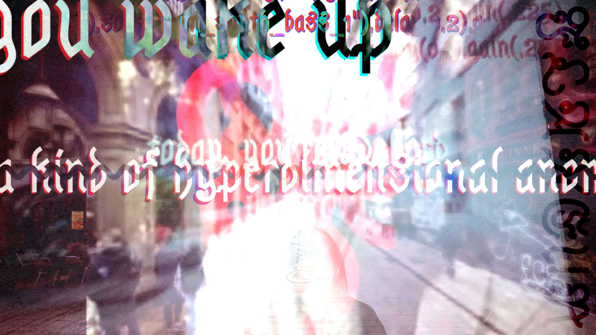

FLÂNEUR

FLÂNEUR is a psychogeographic performance & interactive art system. It consists of a loose collection of web-based tools, centering around the idea of a (sound)walk in Google Street View. The system may be used as a "live-coded" poetry reading, an art installation or a publicly available audio exploration tool.
- A networked soundscape - Building on my work on Sharawadji and Finding Gustavo, FLÂNEUR asks what a truly networked soundscape (in the R. Murray-Schafer sense) might sound like. As the walk progresses, sounds recorded near the current location are dynamically fetched from Freesound. The artist-player is simply there to experience the soundscape, whose constituent parts may have been recorded hours or decades before the present moment. The only control is the artist-player's movement.
- Poetic live coding - the code is ephemeral: written in small fragments, set in a novelty font, ablaze with CSS animations. There may be bits of Strudel, though most of it is free text. There is next to no syntax; the system reacts to the code using fuzzy word embedding search. The closest known concept becomes the interpreted command. In between executed lines of code, the artist-player may use the text to communicate with the audience, write notes to self, or simply ruminate like a Situationist next to a suburban motorway in Paris.
- A HTML choreography - custom-built HTML "figures" may be used. A fake iMessage chat allows conversing with a scripted Débordian boy- or girlfriend. Allen Ginsberg emerges from the image to talk about the power of television. The browser's compositor mangles and distorts the document, bringing in layers of GLSL and CSS transforms and rotating hue and flashing letters and

With FLÂNEUR, I am looking for new ways to tell situated stories on the Internet — my own stories, fictions or documentary recountings. FLÂNEUR is an act of walking within an immense, human-made image of the planet where sonic time is flattened, stretched and re-rolled again according to the designs of thousands of people. One cannot help but encounter it precisely in the way the Network intended.